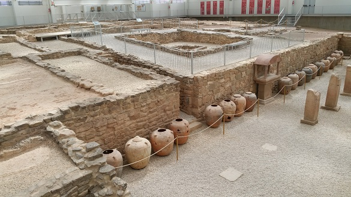

|
VILLA ROMANA DE LA MUSAS
La Villa Romana de "Aurelianum", Arellano, se encuentra situada en la zona media de Navarra. Situada al sur de Arellano, a escasos kilómetros de la localidad de Estella.

Destaca el espectacular mosaico romano de "las Musas". El original se halla en el Museo Arqueológico Nacional. Ver: Video
La villa estaba vinculada a la producción de vino. La pars urbana era una lujosa residencia de relacionada con el culto a Cibeles y a su hijo y amante Attis. Entre los hallazgos más curiosos se encuentra un catavinos de cerámica, icono del museo, el "fumarium", una estancia en la que se envejecía el vino artificialmente a través del calor, la "Cella Vinaria" o bodega, con sus 15 "dolias", con una capacidad media de 700 litros, el altar de piedra, la cisterna de 3 metros de profundidad, el establo y el "Taurobolio", edificio porticado de planta rectangular que se articulaba entorno a un patio, en cuyo centro aparecieron aras grabadas con cabezas de toro.
|
||||